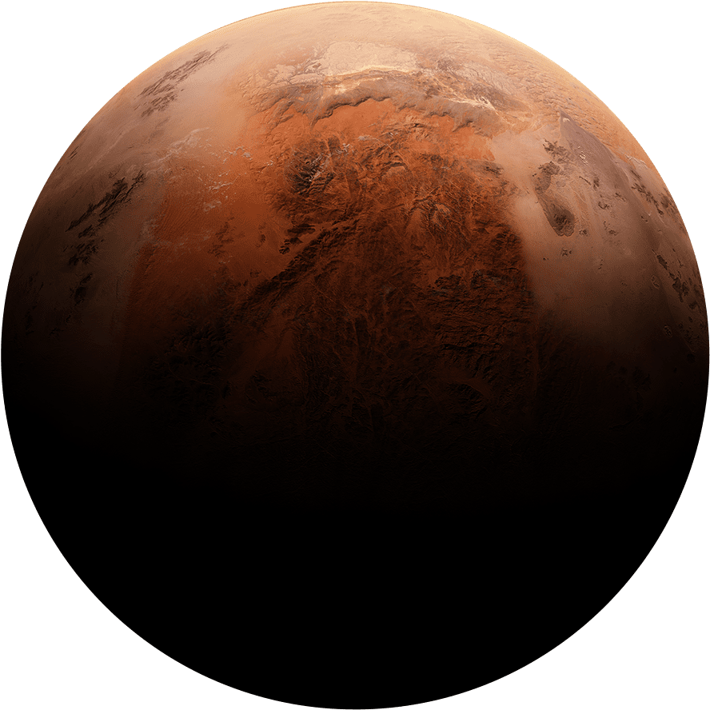

MARS
At Day|
20°C
At Night|
73°C
6.39 × 10^23 kg
Mars is the fourth planet from the Sun and the second-smallest planet in the Solar System, being
larger than only Mercury.
4.603 billion years
In English, Mars carries the name of the Roman god of war and is often
referred to as the "Red Planet".
215.9 million km
From an average distance of 142 million miles (228 million kilometers), Mars is 1.5 astronomical units away from the Sun.